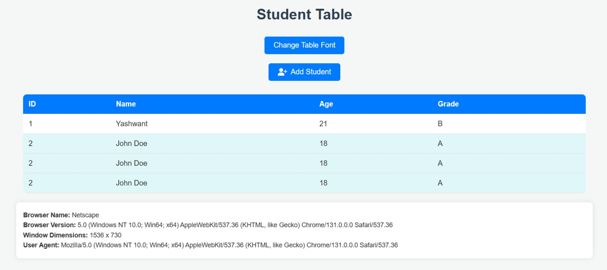
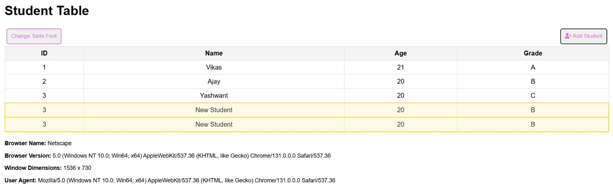

NOTES
Exercise - 1: Basic Front End
Tasks
- level - 1: created a single HTML file with inline CSS/JS to add student rows, highlight them, change the font dynamically, and display browser info.
- level - 2: separated the JavaScript into data-loader.js to load JSON data and solution.js to dynamically generate the student table rows.
- level - 3: integrated the AG Grid Community Edition to render student records and used PapaParse to parse the students.csv file into a compatible format.
Also implemented row highlighting for grade A, and added column sorting and filtering features to enhance data presentation.
Assignment Screenshots

